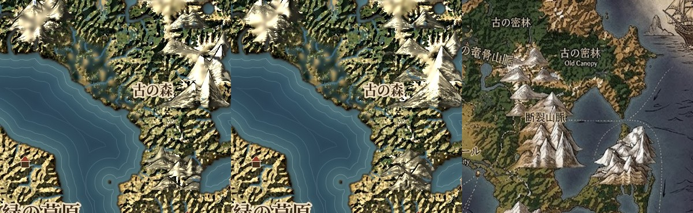
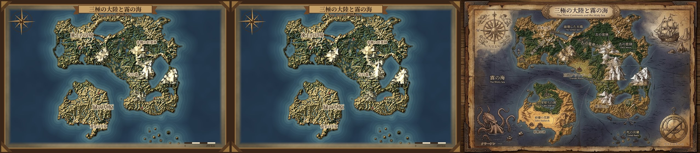
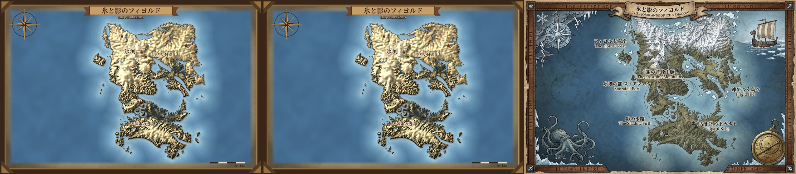
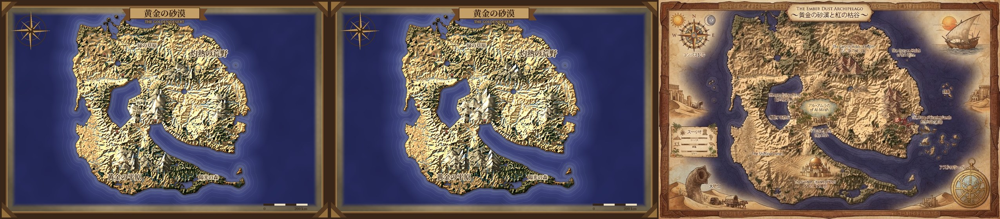

峰を三角形にして、線の陰影を足す試作(プログラム)
概要: 前回(小さな峰の群れ)の次の一手として、峰をはっきりした三角形にし、灰褐色の細い線(ハッチング)で陰影をつけました。三角形らしさと線の陰影は出ましたが、Geminiのような「緑の中に立つ、灰色の線で描かれた峰」にはまだ届いていません。
拡大(世界5の山。左=前回 / 中=今回 / 右=Gemini)

全体(左=前回 / 中=今回 / 右=Gemini)

世界5(大陸3つ)

世界6(フィヨルド)

世界7(砂漠)
変えた点
- 峰の形を、なだらかな山型から、左右の傾きがはっきりした三角形に変えた。
- 線の陰影を、本数を増やし、色を黒から灰褐色に変えた(暗い斜面に2列おき)。
- 輪郭線を少し太くした。
目で見た評価(私の印象。判断はユーザーに)
- 近づいた点: 峰の先が尖り、山の斜面に縦の細い線が入って、立体感が少し出た。
- まだ違う点: 峰がクリーム色で明るく、周りとの境目がぼやけている。Geminiは峰ごとに分かれ、灰色の線がはっきりして、緑の地面から浮き立って見える。こちらは峰がくっついて塊に見える所がある。
- 次に効きそうな点(推測): 峰の足もとに緑の地面を残して峰を分けること、線の灰色を濃くすること。
限界・未確認
- 3枚の目視のみ。数字での評価はしていない。
- 峰の形・線の本数と色は、私が試して決めた値。
- 山岳地帯が細長い南北の帯のため、峰が縦に重なる傾向は残っている。
- Geminiの描き込み(怪物・船・城などの絵)はプログラムでは描けない。
コード: stage14_gen.py(山の描画)/art14_gen.py(三角形の稜線)/gstyle4_gen.py(色・飾り)。